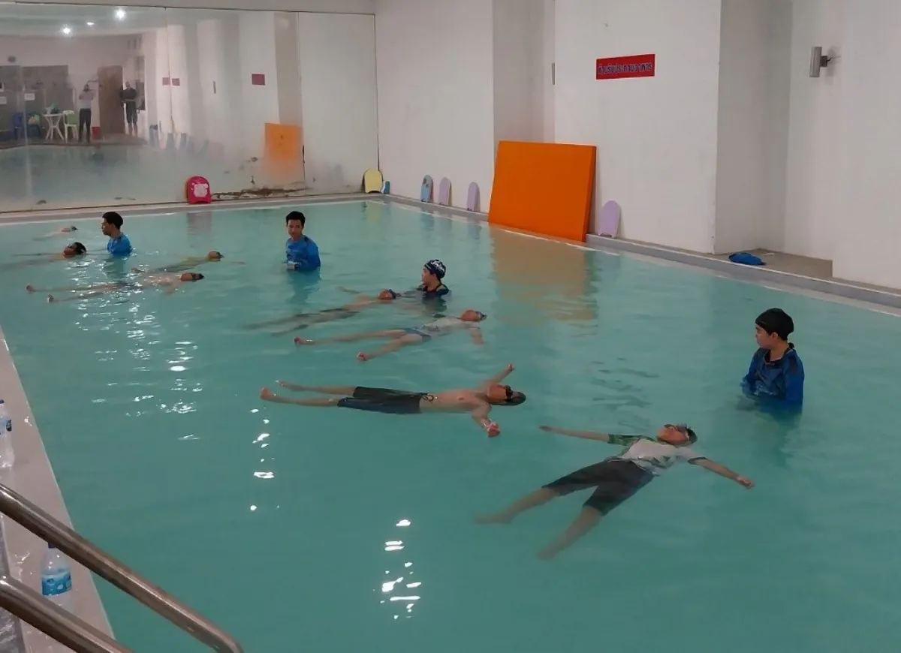
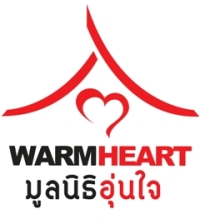
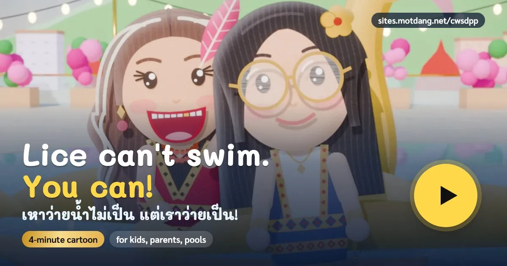
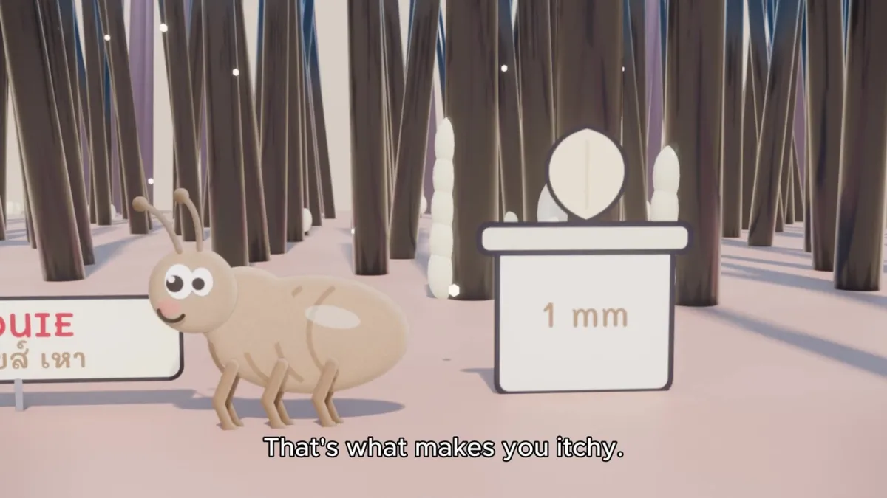
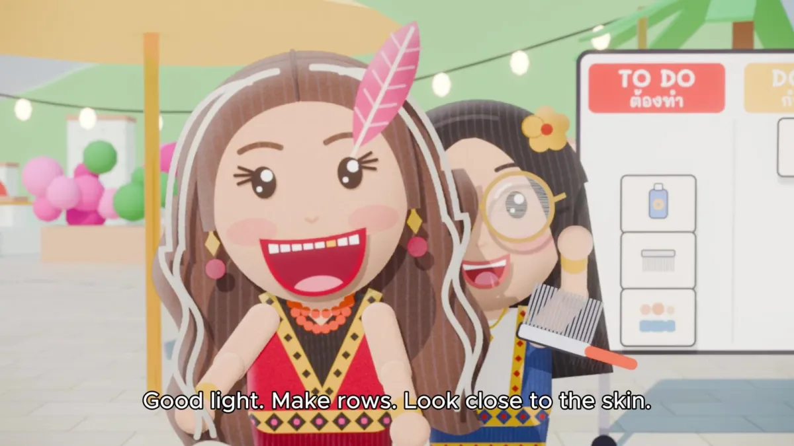
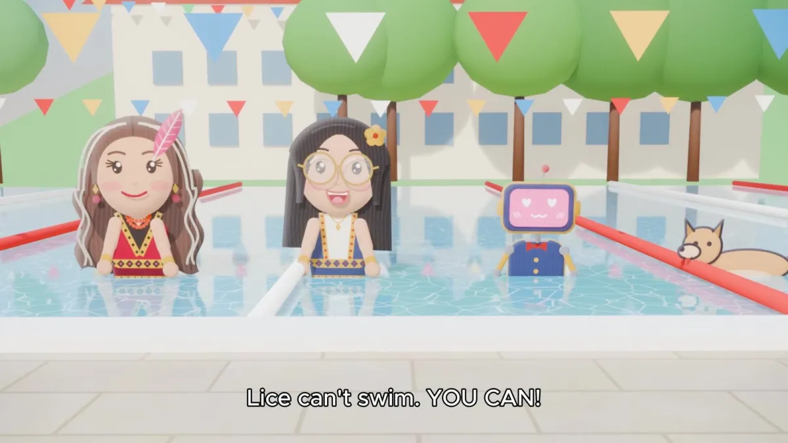

Seven years, 1,967 children
Children who passed the Phrao swim test each year. The small grey number under each year is the running total since 2020.
Why swimming
Drowning is the leading cause of death for Thai children aged 1 to 14, according to the WHO. Thailand's Ministry of Public Health counts more than 1,300 children drowned a year.
A child who can float and kick has a way back to the edge. The Phrao test scores five skills, 1 to 4 points each:
- Kick on the front, 5 metres
- Kick on the back, 5 metres
- Front and back kicks in turn, 10 metres
- Jump in and dog-paddle, 10 metres
- Jump in to a floating bottle and cling to it, 5 minutes

Every reason for not passing fell in 2026
Fewer children enrolled in 2026 (311, against 353 in 2025), and almost as many passed. 20 did not pass, down from 59.
Children who did not pass, by reason
Share of children enrolled. Each child is counted once. Number of children in brackets.
Warm Heart's team picked two problems for 2026: parents who said no, and head lice. Parents saying no fell from 29 children to 9. Head lice fell from 13 children to 5.

Thank you, Warm Heart
The Warm Heart Foundation (มูลนิธิอุ่นใจ) is based in Phrao. It works with poor communities through education and runs children's homes.
In Phrao Safe Swim, Warm Heart is the partner on the ground. It gathers each school's scores into one workbook and writes the program's donor report. This year it went after the reasons children miss the pool, and the pass rate rose from 83.3% to 93.6%.
Seven years of classes in Phrao have put 1,967 children through the test. Thank you to Warm Heart for its steady work against child drowning.
Also thanked in the program's 2025 report: Kru Payu Swim, who trained the Phrao swim team, and Khun Muang-In at Chok Aree Pool.
Head lice cost girls their swim lessons
Pool staff turn children away at the gate when they find nits, and girls are turned away most. Nits are not live lice, and the CDC finds lice unlikely to spread in swimming pools, but a check at the gate does not wait for that.
The fix takes more than one hand:
- Rotary hands out medicated shampoo.
- Warm Heart advises on the lice work and is making a buddy-shampoo video with real kids.
- Nan and Beer star in a cartoon, Lice can't swim. You can!, made by Marcus (Myat Kaung Thant) of Mot Dang.
The cartoon shows 8-year-olds what lice are and how to get rid of them. A louse is the size of a sesame seed. It crawls; it cannot hop or fly. Lice do not care if you are clean or messy. Children that age took to it, girls most of all, and girls are the ones this message is for.
The cartoon came out in October 2026, after this year's classes. This year's fall in lice cases came from Warm Heart's work.
Watch the cartoon



The 2026 classes
11 five-day sessions at the pool, June to August 2026. Small schools shared a session.
| # | Schools | Enrolled | Passed |
|---|---|---|---|
| 1 | Chaeng Ku Rueang (class 1), Ban Nong Pid | 30 | 28 |
| 2 | Chaeng Ku Rueang (class 2) | 30 | 29 |
| 3 | Chaeng Ku Rueang (class 3), Chumchon Ban Pong | 30 | 29 |
| 4 | Chaeng Ku Rueang (class 4), Ban Pa Nai | 30 | 28 |
| 5 | Chaeng Ku Rueang (class 5), Ban San Pong | 26 | 26 |
| 6 | Ban Mae Hia, Ban Tha Makieng | 29 | 26 |
| 7 | Sahakorn Dhamri, Prachasamakkee | 30 | 25 |
| 8 | Ban Ton Rung, Phrao Burapha | 32 | 31 |
| 9 | Ban Pa Tum | 26 | 24 |
| 10 | Ban Mae Pang, Ban San Klang | 26 | 24 |
| 11 | Chumchon Sahakorn Nikhom Witthaya | 22 | 21 |
| 15 schools | 311 | 291 |
Project champions
Drawn as their cartoon selves.
Nan Peacock
Nan raises money for the club's projects and tells their story. She founded motdang.net, a company in Chiang Mai, and served in the US Navy and as a US diplomat.
Michael Peacock
Michael co-manages the swim program with Nan and signs off its decisions. In Nan's comics he is Gai Chon, the rooster.
Give
About ฿1,000 teaches one child to swim, by the program's 2025–26 budget.
Give by bank transfer on the club's page, then e-mail the club treasurer so the club can name you as the donor. Thank you to the donors who already make Phrao possible.